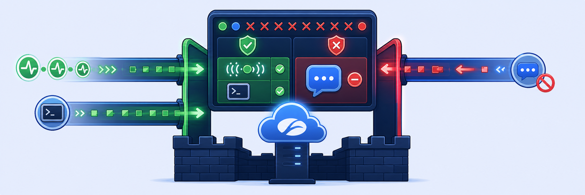

ラボ4: マイクロセグメンテーションポリシーの構成
マイクロセグメンテーション
Zero Trust Branch は マイクロセグメンテーションを実現します。これは、アプリケーション・ワークロード・デバイスを支社内部で分離するきめ細かなアクセス制御で、同じ VLAN 上のホスト間であっても通信が認証・認可されます。これにより横方向の移動を防ぎ、侵害時の影響範囲（ブラストラディウス）を限定します。
- VLAN30 上の2台の OT エンドポイントがデフォルトで相互に到達できることを確認する
- Assets（またはコンソール）で OT2 の DHCP 割り当ての /32 アドレスを特定する
- OT1 → OT2 をブロックする Reject ルールを作成し、ブロックを検証する

- Infrastructure › Connectors › Edge › Zero Trust Branch › Assets [1] に移動し、自分のサイトでフィルタリングして [2]、DHCP 割り当て IP を持つ
10.1.30.xホストを特定します [3]。この IP は OT1 から ping するのでメモします（10.1.30.20、10.1.30.21などになり得ます）。
注意: Assets ページに OT2 が表示されない場合は、POD コンソールで ip neighbour | grep 'ge8' | awk '{print $1}' を実行するか、arp -a ですべて一覧表示します。
ifconfigで OT2 の IP とサブネットマスクを確認します。/32（255.255.255.255）のネットマスクに注目してください。
- Skytap で OT1（VLAN30）を開きます。
- セカンダリの OT エンドポイント（
10.1.30.x）に ping します。デフォルトではパケットが成功し、東西方向の接続が確認できます。

OT1（VLAN30）を開きます。
- Infrastructure › Connectors › Edge › Zero Trust Branch › Sites に移動し、
POD##-Student-Labを選択します。 - Policies [1] › Configure [2] を選択し、Add Policy をクリックします。
- Action: Reject [1]
- Name:
POD##-Block-OT1-to-OT2-Traffic[2] - Source Zone: LAN_ZONE | LAN Zone [3] · Destination Zone: LAN_ZONE | LAN Zone [4]
- Source: Network › Subnet/Host [5] ›
10.1.30.10/24[6] › Add [7] - Destination: Network › Subnet/Host [8] ›
10.1.30.20/24[9] › Add [10] （4.1 で確認した OT2 の実際の IP を使用） - Ports: All [11] › Add [12] をクリックして保存します。
- Commit をクリックして適用します。
- Hit Count が
0に初期化されることを確認します。
- Skytap で OT1（VLAN30）を選択します。
- ターミナルから
10.1.30.20（OT2）に ping します。パケットロスが観測され、Reject ルールが機能していることが分かります。 - ポリシーの Hit Count が 0 から増えたことを確認します。
完了: VLAN30 内でのホスト間マイクロセグメンテーションを検証しました。次は DNS ポリシーを構成します。
覚えておこう
マイクロセグメンテーション = VLAN 内部（ホスト間）のトラフィック制御。マクロ = VLAN 間。各 OT ホストは /32 を持つため、フローが ZT800 を通ってポリシーに当たります。OT2 の DHCP IP は Assets または
ip neighbour | grep 'ge8' / arp -a で見つけます。ルールアクション Reject は能動的に拒否します（Drop は黙って破棄）。ラボ2と同じ Commit → Hit-Count-0 → 検証の流れです。質問する
メモを追加